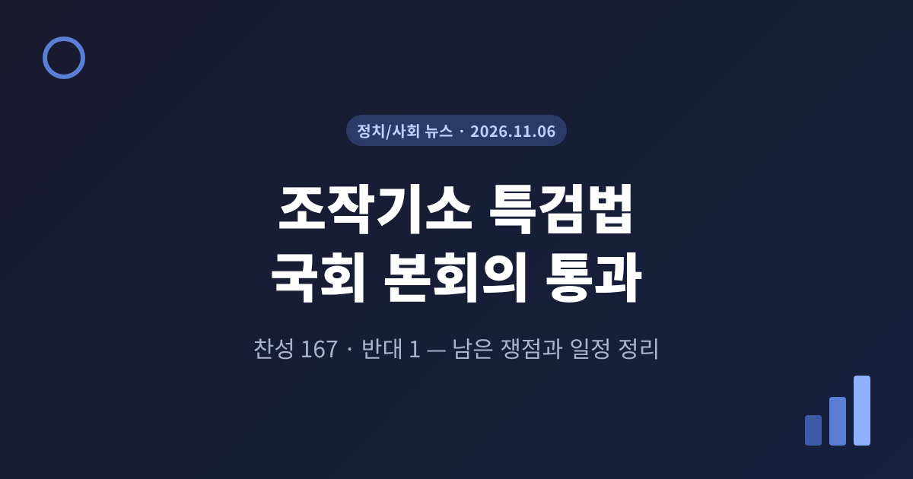
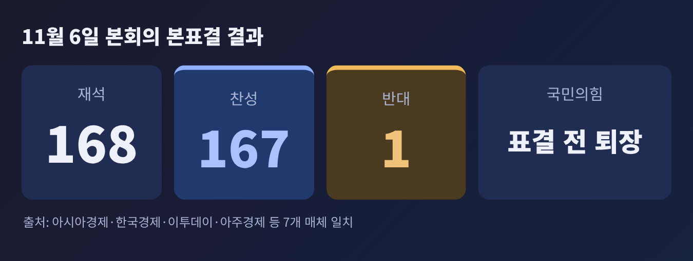
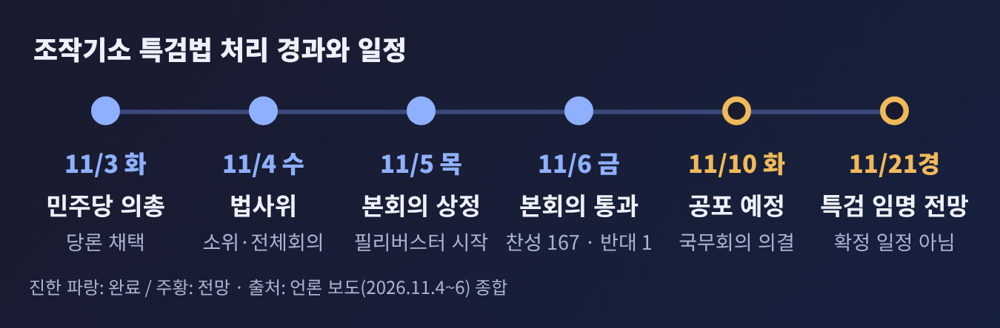
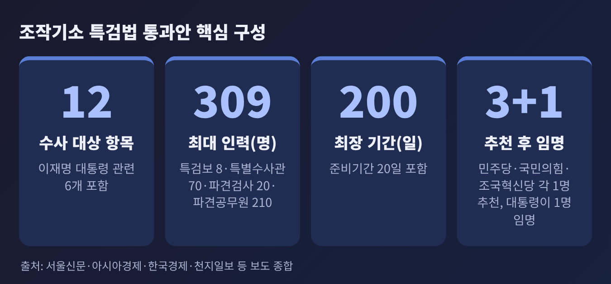
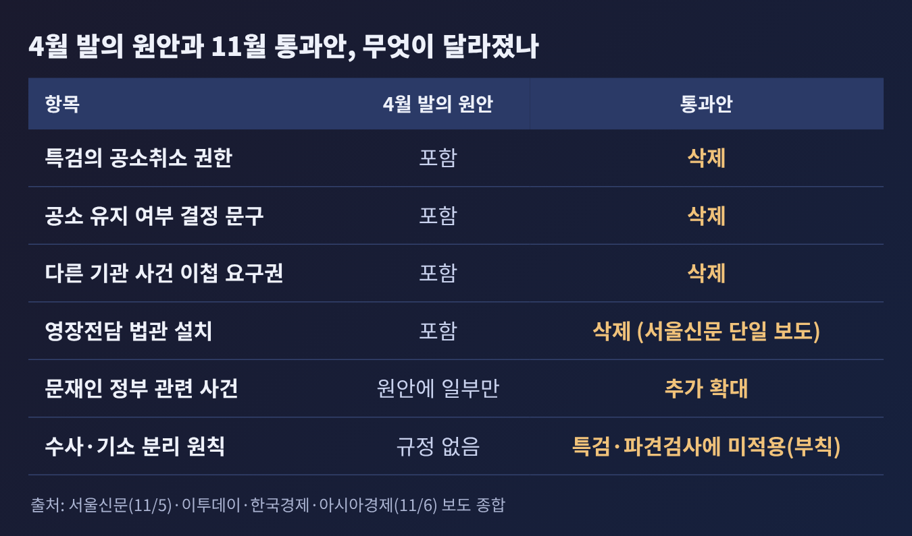
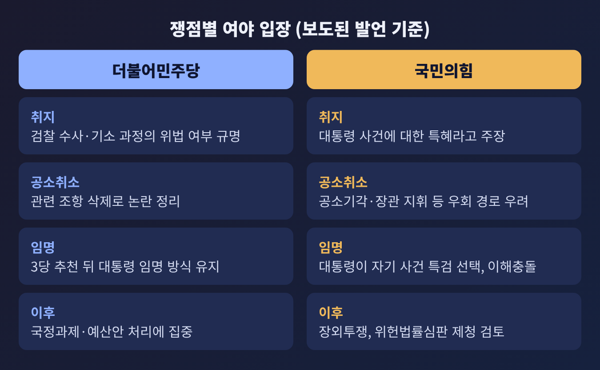

3줄 요약
이번 글에서는 조작기소 특검법이 국회를 통과하기까지의 과정과 최종 내용, 아직 남아 있는 쟁점을 정리해 보겠습니다. 앞서 상정 예고 단계를 다뤘으므로, 이번에는 통과된 법안의 모습과 앞으로의 일정에 무게를 두었습니다. 여야 양측의 입장은 보도된 발언을 기준으로 나란히 적습니다.
법안은 4월에 발의됐습니다. 당시 '대통령 사건의 공소취소로 이어질 수 있다'는 비판이 나오면서 추진이 멈췄고, 6개월 넘게 계류됐다고 보도됐습니다. 더불어민주당은 11월 3일 의원총회에서 이 법안을 당론으로 채택했습니다.
처리는 빠르게 진행됐습니다.


반대 1표는 이주영 개혁신당 의원이 던졌다고 이투데이가 보도했습니다. 다른 매체에서는 확인되지 않은 내용입니다. 종결동의안 표결이 183명 중 182명 찬성이었다는 보도도 신아일보 한 곳에서만 확인됩니다.
이재명 정부 출범 이후 일곱 번째 특검이자, 검찰청 폐지 이후 처음 가동되는 특검이라는 점도 여러 매체가 짚었습니다.
이 특검의 수사 대상은 모두 12개 항목입니다. 이 가운데 6개가 이재명 대통령 관련 사건입니다. 대장동·위례·백현동 개발사업 배임 의혹, 성남FC 후원금 의혹, 쌍방울 대북송금 의혹, 경기도 법인카드 사건 등이 해당합니다. 나머지에는 서해 공무원 피격, 통계 조작, 탈북어민 강제북송, 월성원전 1호기 경제성 평가 의혹처럼 문재인 정부 시기 사건이 포함됩니다.
특검은 피의자의 유무죄를 다시 따지는 것이 아닙니다. 윤석열 정부 시기 검찰·국가정보원·감사원 등이 수사와 기소 과정에서 권한을 남용했는지를 살펴봅니다. 다만 상당수 사건이 이미 재판 중이거나 판결이 나온 상태여서, 같은 증거를 특검과 법원이 각자 판단하게 되는 구조라고 아시아경제는 짚었습니다.

규모와 임명 방식은 다음과 같습니다. 인력은 특검보 8명, 특별수사관 70명 이내, 파견검사 20명 이내, 파견공무원 210명 이내로 최대 309명입니다. 내란특검의 최대 317명과 비슷한 규모입니다. 활동 기간은 준비기간 20일을 포함해 최장 200일입니다. 민주당·국민의힘·조국혁신당이 후보를 한 명씩 추천하면 대통령이 이 중 한 명을 임명합니다.
원안과 통과안의 가장 큰 차이는 공소취소와 관련한 조항입니다.

법사위에서 특검의 공소취소 권한, 공소 유지 여부를 결정하게 한 문구, 다른 기관 사건의 이첩 요구권이 삭제됐습니다. 영장전담 법관 설치 조항도 빠졌다고 서울신문은 전했습니다. 반면 문재인 정부 관련 사건이 대상에 추가됐고, 특검과 파견검사에게는 수사·기소 분리 원칙을 적용하지 않는다는 규정이 들어갔습니다.
쟁점은 크게 세 가지로 나뉩니다.
첫째, 공소취소의 길이 완전히 막혔는가입니다. 민주당은 조항을 삭제해 논란을 정리했다는 입장입니다. 김의겸 법사위 민주당 간사는 소위 직후 "공소 취소와 관련된 내용은 말끔히 삭제했다"고 말했다고 전해집니다. 김민석 민주당 대표는 반대 명분이던 조항을 모두 없앴는데도 필리버스터를 한 것은 "정치검찰과 공범임을 자인하는 꼴"이라고 했습니다.
국민의힘은 다르게 봅니다. 박형수 법사위 야당 간사는 특검이 조작 기소라고 결론 내리면 공소기각 요청이 이어질 수 있고, 법무부 장관이 공소 취소를 명령하는 방법도 있다고 주장했습니다. 지난달 시행된 개정 형사소송법이 중대한 위법수사에 기초한 기소를 공소기각 사유로 추가했기 때문입니다. 다만 법원은 특검의 판단에 구속되지 않고 독립적으로 결정한다고 아시아경제는 설명했습니다. 법사위 전문위원은 형사소송법 규정을 준용하면 특검이 공소를 취소할 수 있다고 봤지만, 강제 이첩권이 삭제돼 공소청이 맡은 기존 재판의 공소를 직접 취소할 수 있는지는 따로 따져야 한다고 기사는 전합니다.
둘째, 수사·기소 분리 원칙의 예외입니다. 정부는 10월 2일 검찰청을 폐지하고 수사는 중수청, 기소와 공소유지는 공소청이 맡도록 나눴습니다. 그런데 이 법은 특검과 파견검사에게 개정 전 형사소송법을 적용하고, 이들이 작성한 조서의 증거능력도 종전 규정을 따르게 했습니다. 한국경제와 아시아경제는 이를 부칙 제6조로 소개했습니다.
비판은 야당 쪽에서만 나온 것이 아닙니다. 조국 조국혁신당 혁신정책연구원장은 효력을 잃은 법을 적용하면 위헌·위법 문제가 생길 수 있다고 SNS에 적었습니다. 이에 민주당 김한규 원내정책수석부대표는 선관위 특검법에도 비슷한 조항이 있고 위헌 조항은 없다는 입장을 냈습니다. 법무부 이진수 직무대행은 4일 법사위에서 검사를 파견하지 않는 것이 가장 바람직하고, 불가피하면 규모를 절반 이하로 줄여야 한다고 말했지만 파견검사 20명은 유지됐습니다.
셋째, 이해충돌과 재판 독립입니다. 박형수 의원은 대통령이 자기 사건을 수사할 특검을 고르는 구조를 "명백한 이해충돌"이라고 주장했습니다. 이원석 전 검찰총장은 재판 중인 사건을 특검이 다시 판단하는 것이 재판 독립을 침해한다는 입장문을 냈습니다. 홍익표 청와대 정무수석은 예결위에서 이 법이 대통령 보호가 아니라 과거 검찰 권력의 권한 남용을 규명하려는 것이라고 답했습니다.
여당 내부에서도 신중론이 있었습니다. 정성호 민주당 의원은 "좀 더 숙의 과정이 필요하지 않았나 그런 느낌이 든다"고 말했습니다.

두 입장을 한 장으로 줄이면 이렇습니다. 민주당은 수사 과정의 위법 여부를 가려야 하고 공소취소 조항도 삭제했다고 설명합니다. 국민의힘은 대통령 사건에 대한 특혜이며 삭제 이후에도 우회 경로가 남아 있다고 주장합니다. 한병도 민주당 원내대표는 특검이 기존 재판에 개입하지 않고 수사 과정의 위법행위를 밝히는 것이 목적이라고 설명했습니다. 장동혁 국민의힘 대표는 6일 규탄대회에서 법치주의가 무너지는 날이라는 취지로 비판했습니다. 인용 문구는 매체마다 달라 이 글에서는 요지만 옮깁니다.
앞으로의 일정은 다음과 같이 전해집니다.
공포가 10일이라는 보도는 한국경제·서울경제 등 여러 곳에서 나왔지만, 이투데이는 '이르면 다음 주 국무회의'로 표현했습니다. 임명 시점도 정해진 일정이 아니라 전망입니다.
첫 변수는 국민의힘의 후보 추천 참여 여부입니다. 국민의힘은 위헌법률심판 제청도 검토 중이라고 한국경제는 전했지만, 이 부분은 한 곳에서만 확인됩니다. 제청이 실제로 이뤄질지는 아직 알려진 바가 없습니다.
정국 전체로 보면 예산 국면과 겹친다는 점이 눈에 띕니다. 국민의힘은 미래대응기금 등을 들어 내년 예산안의 대폭 삭감을 예고했고, 민주당은 장외투쟁에 흔들리지 말고 국정과제와 예산안 처리에 집중하겠다는 입장입니다. 필리버스터와 장외투쟁이 이어지면 예산안과 주택공급 법안 협상에 영향을 줄 수 있다는 관측이 나옵니다. 조희대 대법원장 국정조사 계획서는 12일 또는 19일 채택을 검토 중이지만, 민주당 내 이견으로 보류된 상태라고 전해졌습니다.
정리하면 이렇습니다. 법은 통과됐지만, 공소취소의 우회 가능성과 수사·기소 분리의 예외, 임명 방식의 이해충돌이라는 세 쟁점은 여전히 열려 있습니다. 앞으로 지켜볼 지점은 후보 추천 참여 여부와 공포 이후 특검의 첫 수사 범위입니다.
특검이 실제로 무엇을 밝혀내는지는 아직 아무도 알 수 없는 일입니다. 결과를 보고 판단해도 늦지 않다는 말씀을 드리며 글을 맺겠습니다.
※ 이 글은 2026년 11월 6일 저녁까지의 언론 보도를 바탕으로 정리했으며, 일부 수치와 일정은 매체별로 다르게 보도됐습니다.